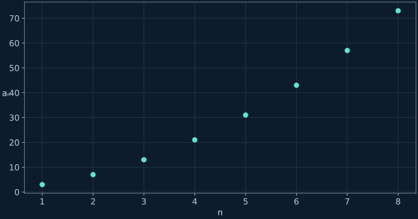
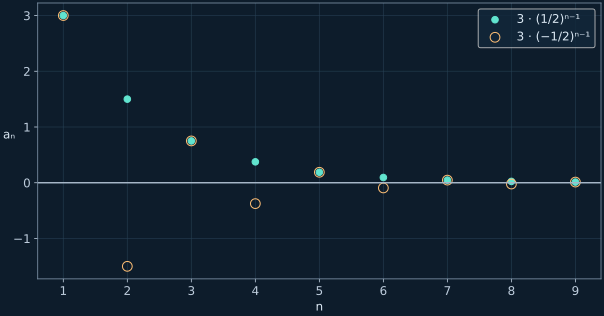

Последовательности и прогрессии
Как доказывать монотонность, находить общий член и считать конечную сумму.
← Все конспектыИсточники и границы записи
Видео 18:57: учебная часть начинается примерно с 08:24; запись заканчивается на выводе aₙ=2n−1. Дубликат этих субтитров с именем 19:27 повторно не использовался. Объяснения сумм и геометрической прогрессии развивают формулы видимого слайда и отмечены как дополнение.
1. Что такое последовательность
Последовательность — функция натурального номера n. Здесь номера начинаются с 1. График состоит из отдельных точек: значения при дробных n не являются членами последовательности.
2. Доказательство монотонности
Сравниваем соседние члены для каждого допустимого n. Положительная разность означает строгое возрастание, отрицательная — строгое убывание. Несколько первых чисел могут подсказать ответ, но не являются доказательством.
Пример aₙ=n²+n+1
Последовательность строго возрастает для всех n≥1. При подстановке n+1 заменяем все вхождения n, а не только степень.

3. Арифметическая прогрессия
Разность соседних членов r должна быть постоянной, то есть не зависеть от n. От первого до n-го члена совершается n−1 прибавлений этой разности.
Найти седьмой член
Доказать арифметичность
4. Общий член по двум значениям
a₁=1 и a₅=9
r>0, поэтому прогрессия возрастает. Проверка: a₅=2·5−1=9.
5. Сумма первых n членов
Дополнение к формуле слайда. Складываем сумму в прямом и обратном порядке: каждая пара даёт a₁+aₙ, таких пар n. Получили удвоенную сумму, поэтому делим на 2.
Для a₁=−4, r=2, n=7
6. Геометрическая прогрессия
Каждый следующий член получается умножением на постоянное q. Надёжное определение — aₙ₊₁=q·aₙ; запись через отношение допустима лишь при ненулевом знаменателе.
Чтобы получить сумму, вычитаем qSₙ из Sₙ: внутренние слагаемые сокращаются, остаётся a₁−a₁qⁿ. Формула конечной суммы не требует |q|<1.
Дополнительный пример: a₁=3, q=1/2

Теперь попробуй самостоятельно
Дополнительные задачи находятся только во вкладке «Тренировка»: по 10 на каждый тип, с раскрываемыми ответами и разбором.
Открыть тренировку →